Cluster analysis is a way to examine similarities and dissimilarities of observations or objects. Data often fall naturally into groups, or clusters, of observations, where the characteristics of objects in the same cluster are similar and the characteristics of objects in different clusters are dissimilar.
This demo illustrates how to perform cluster analysis using the Statistics Toolbox.
The Statistics Toolbox includes functions to perform two types of cluster analysis, K-means clustering and hierarchical clustering.
K-means clustering is a partitioning method that treats observations in your data as objects having locations and distances from each other. It partitions the objects into K mutually exclusive clusters, such that objects within each cluster are as close to each other as possible, and as far from objects in other clusters as possible. Each cluster is characterized by its centroid, or center point. Of course, the distances used in clustering often do not represent spatial distances.
Hierarchical clustering is a way to investigate grouping in your data, simultaneously over a variety of scales of distance, by creating a cluster tree. The tree is not a single set of clusters, as in K-Means, but rather a multi-level hierarchy, where clusters at one level are joined as clusters at the next higher level. This allows you to decide what scale or level of clustering is most appropriate in your application.
Some of the functions used in the example call MATLAB's built-in random number generation functions. To duplicate the exact results shown in this demo, you should execute the commands below, to set the random number generators to a known state. If you do not set their state, your results may differ in trivial ways, for example, you may see clusters numbered in a different order. There is also a chance that a suboptimal cluster solution may result (the demo includes a discussion of suboptimal solutions, including ways to avoid them).
seed = 931316785; rand('seed',seed); randn('seed',seed);
In the 1920's, botanists collected measurements on the sepal length, sepal width, petal length, and petal width of 150 iris specimens, 50 from each of three species. The measurements became known as Fisher's iris data.
Each observation in these data comes from a known species, and so there is already an obvious way to group the data. For the moment, we will ignore the species information and cluster the data using only the raw measurements. When we're done, we can compare the resulting clusters to the actual species, to see if the three types of iris possess distinct characteristics.
The function KMEANS performs K-Means clustering, using an iterative algorithm that assigns objects to clusters so that the sum of distances from each object to its cluster centroid, over all clusters, is a minimum. Used on Fisher's iris data, it will find the natural groupings among iris specimens, based on their sepal and petal measurements. With K-means clustering, you must specify the number of clusters that you want to create.
First, load the data and call KMEANS with the desired number of clusters set to 2, and using squared Euclidean distance. To get an idea of how well-separated the resulting clusters are, you can make a silhouette plot. The silhouette plot displays a measure of how close each point in one cluster is to points in the neighboring clusters.
load fisheriris [cidx2,cmeans2] = kmeans(meas,2,'dist','sqeuclidean'); [silh2,h] = silhouette(meas,cidx2,'sqeuclidean');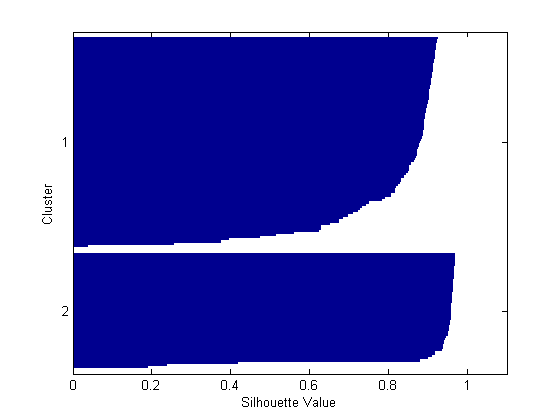
From the silhouette plot, you can see that most points in both clusters have a large silhouette value, greater than 0.8, indicating that those points are well-separated from neighboring clusters. However, each cluster also contains a few points with low silhouette values, indicating that they are nearby to points from other clusters.
It turns out that the fourth measurement in these data, the petal width, is highly correlated with the third measurement, the petal length, and so a 3-D plot of the first three measurements gives a good representation of the data, without resorting to four dimensions. If you plot the data, using different symbols for each cluster created by KMEANS, you can identify the points with small silhouette values, as those points that are close to points from other clusters.
ptsymb = {'bs','r^','md','go','c+'};
for i = 1:2
clust = find(cidx2==i);
plot3(meas(clust,1),meas(clust,2),meas(clust,3),ptsymb{i});
hold on
end
plot3(cmeans2(:,1),cmeans2(:,2),cmeans2(:,3),'ko');
plot3(cmeans2(:,1),cmeans2(:,2),cmeans2(:,3),'kx');
hold off
xlabel('Sepal Length'); ylabel('Sepal Width'); zlabel('Petal Length');
view(-137,10);
grid on
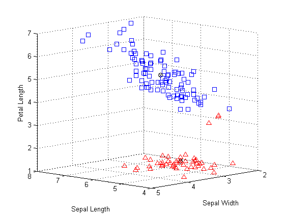 The centroids of each cluster are plotted using circled X's. Three of the points from the lower cluster, plotted with triangles, are very close to points from the upper cluster, plotted with squares. But, in fact, because the upper cluster is so spread out, those three points are closer to the centroid of the lower cluster than to that of the upper cluster, even though they are separated from the bulk of the points in their own cluster by a gap. Because K-means clustering only considers distances, and not densities, this kind of result can occur.
You can increase the number of clusters to see if KMEANS can find further grouping structure in the data. This time, use the optional 'display' parameter to print out information about each iteration in the clustering algorithm.
[cidx3,cmeans3] = kmeans(meas,3,'display','iter');
iter phase num sum
1 1 150 181.828
2 1 23 92.2739
3 1 7 80.4678
4 1 3 79.054
5 1 1 78.8514
6 2 0 78.8514
6 iterations, total sum of distances = 78.8514
At each iteration, the KMEANS algorithm reassigns points among clusters to decrease the sum of point-to-centroid distances, and then recomputes cluster centroids for the new cluster assignments. Notice that the total sum of distances and the number of reassignments decrease at each iteration until the algorithm reaches a minimum. The algorithm used in KMEANS consists of two phases. In the example here, the second phase of the algorithm did not make any reassignments, indicating that the first phase reached a minimum after five iterations.
By default, KMEANS begins the clustering process using a randomly selected set of initial centroid locations. Just as in many other types of numerical minimizations, the solution that KMEANS reaches sometimes depends on the starting points, and it is possible for it to reach a local minimum, where reassigning any one point to a new cluster would increase the total sum of point-to-centroid distances, but where a better solution does exist. However, you can use the optional 'replicates' parameter to overcome that problem. When you specify more than one replicate, KMEANS repeats the clustering process starting from different randomly selected centroids for each replicate.
[cidx3,cmeans3,sumd3] = kmeans(meas,3,'replicates',5,'display','final');
7 iterations, total sum of distances = 78.8514 6 iterations, total sum of distances = 78.8514 5 iterations, total sum of distances = 78.8514 6 iterations, total sum of distances = 142.754 5 iterations, total sum of distances = 78.8514
The output shows that, even for this relatively simple problem, non-global minima do exist. Each of these five replicates began from a different set of initial centroids. Depending on where it started from, KMEANS reached one of two different solutions. However, the final solution that KMEANS returns is the one with the lowest total sum of distances, over all replicates. The third output argument contains the sum of distances within each cluster for that best solution.
sum(sumd3)
ans = 78.8514
A silhouette plot for this three-cluster solution indicates that there is one cluster that is well-separated, but that the other two clusters are not very distinct.
[silh3,h] = silhouette(meas,cidx3,'sqeuclidean');
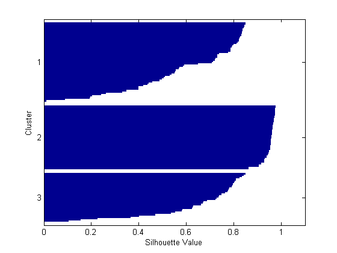 Again, you can plot the raw data to see how KMEANS has assigned the points to clusters.
for i = 1:3 clust = find(cidx3==i); plot3(meas(clust,1),meas(clust,2),meas(clust,3),ptsymb{i}); hold on end plot3(cmeans3(:,1),cmeans3(:,2),cmeans3(:,3),'ko'); plot3(cmeans3(:,1),cmeans3(:,2),cmeans3(:,3),'kx'); hold off xlabel('Sepal Length'); ylabel('Sepal Width'); zlabel('Petal Length'); view(-137,10); grid on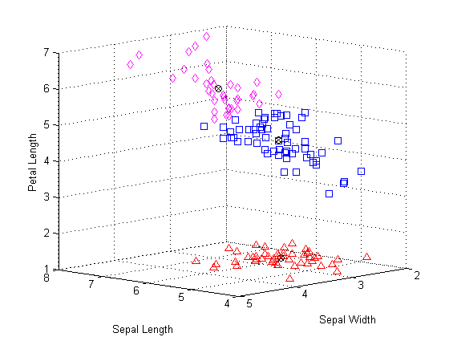
You can see that KMEANS has split the upper cluster from the two-cluster solution, and that those two clusters are very close to each other. Depending on what you intend to do with these data after clustering them, this three-cluster solution may be more or less useful than the previous, two-cluster, solution. The first output argument from SILHOUETTE contains the silhouette values for each point, which you can use to compare the two solutions quantitatively. The average silhouette value was larger for the two-cluster solution, indicating that it is a better answer purely from the point of view of creating distinct clusters.
[mean(silh2) mean(silh3)]
ans =
0.8504 0.7357
You can also cluster these data using a different distance. The cosine distance might make sense for these data because it would ignore absolute sizes of the measurements, and only consider their relative sizes. Thus, two flowers that were different sizes, but which had similarly shaped petals and sepals, might not be close with repect to squared Euclidean distance, but would be close with respect to cosine distance.
[cidxCos,cmeansCos] = kmeans(meas,3,'dist','cos');
From the silhouette plot, these clusters appear to be only slightly better separated than those found using squared Euclidean distance.
[silhCos,h] = silhouette(meas,cidxCos,'cos');
[mean(silh2) mean(silh3) mean(silhCos)]
ans =
0.8504 0.7357 0.7491
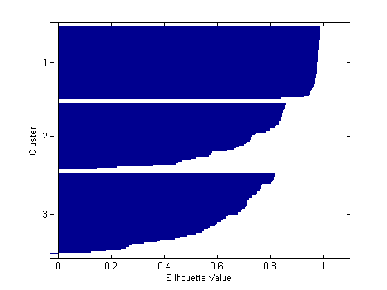 Notice that the order of the clusters is different than in the previous silhouette plot. This is because KMEANS chooses initial cluster assignments at random.
By plotting the raw data, you can see the differences in the cluster shapes created using the two different distances. The two solutions are similar, but the two upper clusters are elongated in the direction of the origin when using cosine distance.
for i = 1:3 clust = find(cidxCos==i); plot3(meas(clust,1),meas(clust,2),meas(clust,3),ptsymb{i}); hold on end hold off xlabel('Sepal Length'); ylabel('Sepal Width'); zlabel('Petal Length'); view(-137,10); grid on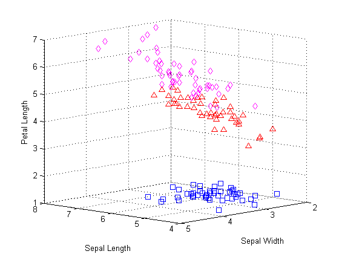
This plot does not include the cluster centroids, because a centroid with respect to the cosine distance corresponds to a half-line from the origin in the space of the raw data. However, you can make a parallel coordinate plot of the normalized data points to visualize the differences between cluster centroids.
lnsymb = {'b-','r-','m-'};
names = {'SL','SW','PL','PW'};
meas0 = meas ./ repmat(sqrt(sum(meas.^2,2)),1,4);
ymin = min(min(meas0));
ymax = max(max(meas0));
for i = 1:3
subplot(1,3,i); plot(meas0(cidxCos==i,:)',lnsymb{i});
hold on; plot(cmeansCos(i,:)','k-','LineWidth',2); hold off;
title(sprintf('Cluster %d',i));
set(gca,'Xlim',[.9 4.1],'XTick',1:4,'XTickLabel',names,'YLim',[ymin ymax])
end
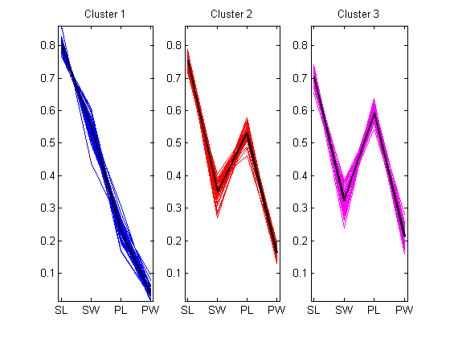 It's clear from this plot that specimens from each of the three clusters have distinctly different relative sizes of petals and sepals on average. The first cluster has petals that are strictly smaller than their sepals. The second two clusters' petals and sepals overlap in size, however, those from the third cluster overlap more than the second. You can also see that the second and third clusters include some specimens which are very similar to each other.
Because we know the species of each observation in the data, you can compare the clusters discovered by KMEANS to the actual species, to see if the three species have discernably different physical characterisatics. In fact, as the following plot shows, the clusters created using cosine distance differ from the species groups for only five of the flowers. Those five points, plotted with stars, are all near the boundary of the upper two clusters.
subplot(1,1,1); for i = 1:3 clust = find(cidxCos==i); plot3(meas(clust,1),meas(clust,2),meas(clust,3),ptsymb{i}); hold on end xlabel('Sepal Length'); ylabel('Sepal Width'); zlabel('Petal Length'); view(-137,10); grid on sidx = grp2idx(species); miss = find(cidxCos ~= sidx); plot3(meas(miss,1),meas(miss,2),meas(miss,3),'k*'); legend({'setosa','versicolor','virginica'},1); hold off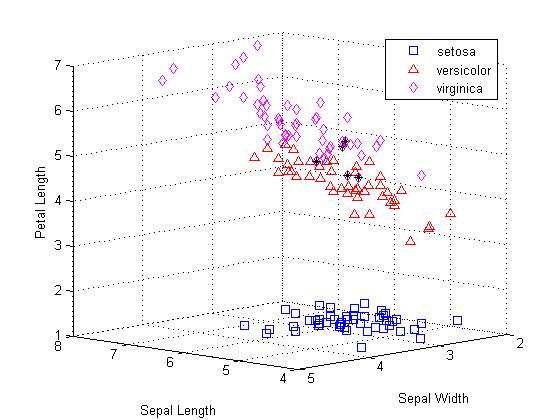
K-Means clustering produced a single partition of the iris data, but you might also want to investigate different scales of grouping in your data. Hierarchical clustering lets you do just that, by creating a hierarchical tree of clusters.
First, create a cluster tree using distances between observations in the iris data. Begin by using Euclidean distance.
eucD = pdist(meas,'euclidean'); clustTreeEuc = linkage(eucD,'average');
The cophenetic correlation is one way to verify that the cluster tree is consistent with the original distances. Large values indicate that the tree fits the distances well, in the sense that pairwise linkages between observations correlate with their actual pairwise distances. This tree seems to be a fairly good fit to the distances.
cophenet(clustTreeEuc,eucD)
ans =
0.8770
To visualize the hierarchy of clusters, you can plot a dendrogram.
[h,nodes] = dendrogram(clustTreeEuc,0); set(gca,'TickDir','out','TickLength',[.002 0],'XTickLabel',[]);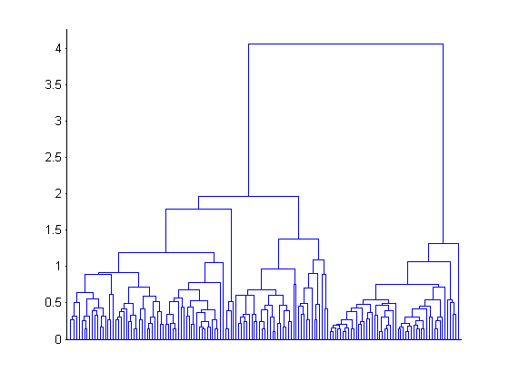
The root node in this tree is much higher than the remaining nodes, confirming what you saw from K-Means clustering: there are two large, distinct groups of observations. Within each of those two groups, you can see that lower levels of groups emerge as you consider smaller and smaller scales in distance. There are many different levels of groups, of different sizes, and at different degrees of distinctness.
Based on the results from K-Means clustering, cosine might also be a good choice of distance measure. The resulting hierarchical tree is quite different, suggesting a very different way to look at group structure in the iris data.
cosD = pdist(meas,'cosine'); clustTreeCos = linkage(cosD,'average'); cophenet(clustTreeCos,cosD)
ans =
0.9360
[h,nodes] = dendrogram(clustTreeCos,0); set(gca,'TickDir','out','TickLength',[.002 0],'XTickLabel',[]);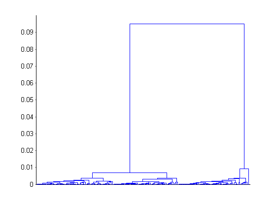
The highest level of this tree separates iris specimens into two very distinct groups. The dendrogram shows that, with respect to cosine distance, the within-group differences are much smaller relative to the between-group differences than was the case for Euclidean distance. This is exactly what you would expect for these data, since the cosine distance computes a zero pairwise distance for objects that are in the same "direction" from the origin.
With 150 observations, the plot is cluttered, but you can make a simplified dendrogram that does not display the very lowest levels of the tree.
[h,nodes] = dendrogram(clustTreeCos,12);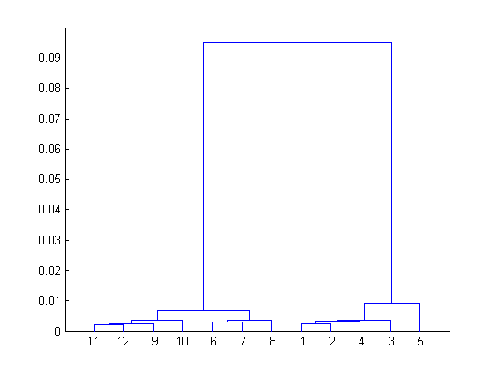
The three highest nodes in this tree separate out three equally-sized groups, plus a single specimen (labelled as leaf node 5) that is not near any others.
[sum(ismember(nodes,[11 12 9 10])) sum(ismember(nodes,[6 7 8])) ...
sum(ismember(nodes,[1 2 4 3])) sum(nodes==5)]
ans =
54 46 49 1
For many purposes, the dendrogram might be a sufficient result. However, you can go one step further, and use the CLUSTER function to cut the tree and explicitly partition observations into specific clusters, as with K-Means. Using the hierarchy from the cosine distance to create clusters, specify a linkage height that will cut the tree below the three highest nodes, and create four clusters, then plot the clustered raw data.
hidx = cluster(clustTreeCos,'criterion','distance','cutoff',.006); for i = 1:5 clust = find(hidx==i); plot3(meas(clust,1),meas(clust,2),meas(clust,3),ptsymb{i}); hold on end hold off xlabel('Sepal Length'); ylabel('Sepal Width'); zlabel('Petal Length'); view(-137,10); grid on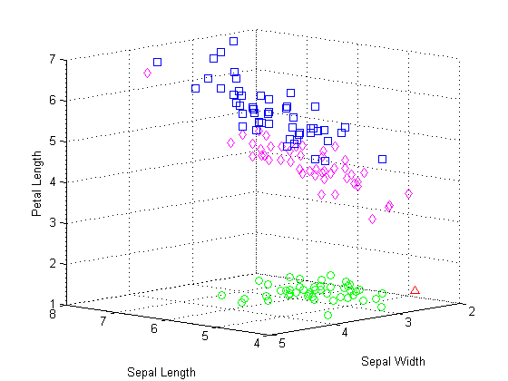
This plot shows that the results from hierarchical clustering with cosine distance are qualitatively similar to results from K-Means, using three clusters. However, creating a hierarchical cluster tree allows you to visualize, all at once, what would require considerable experimentation with different values for K in K-Means clustering.
Hierarchical clustering also allows you to experiment with different linkages. For example, clustering the iris data with single linkage, which tends to link together objects over larger distances than average distance does, gives a very different interpretation of the structure in the data.
clustTreeSng = linkage(eucD,'single'); [h,nodes] = dendrogram(clustTreeSng,0); set(gca,'TickDir','out','TickLength',[.002 0],'XTickLabel',[]);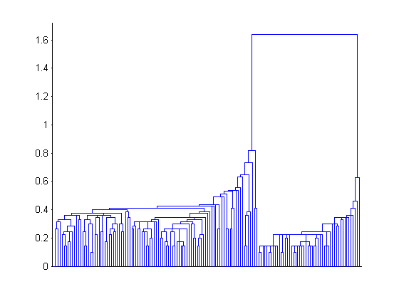